How to turn a bottle, tube or container model into a 3D Designer Tool product. Shoppers choose a colour and finish for each part and add their artwork to the body label and the cap label. This workflow has no SVG files.
1Before you start
Every product is made of 5 parts: 3 plastic parts shoppers colour, and 2 label parts shoppers put artwork on. You deliver one GLB and one PNG image per part.
Part (object)
Mesh
Material
Shopper can change
Body
Body1
Designarea
Colour, finish
Outer Closure
Outer Closure1
Designarea
Colour, finish
Inner Closure
Inner Closure1
Designarea
Colour, finish
Body Label
Body Label1
BodyLabel
Artwork
Outer Closure Label
Outer Closure Label1
OuterClosureLabel
Artwork
Source modelsource OBJ, in mm
Clean up in Blender5 parts, names
Materials & labelsgrey + clear labels
UVs & exportGLB named by SKU
Part imagesone PNG per mesh
Names must match everywhere: the mesh name in the GLB and the part image file name (Body1.png). Spaces are part of the name: Outer Closure1, not OuterClosure1.
glTF Binary (.glb), +Y Up, named by product code (e.g. BOTTLE-1L.glb)
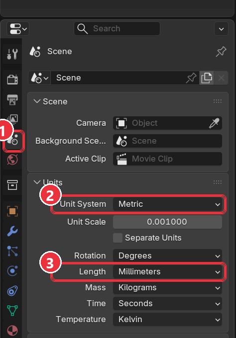
Blender → Scene Properties → Units: Metric, Millimeters.
3Part A: Build the 3D object (GLB)
The screenshots in this section show a 1 L reference bottle. Open your reference GLB next to your own work and match it.
Import the source model and check its size. File → Import → Wavefront (.obj). Press N, open the Item tab and compare Dimensions with the real product. Keep an untouched copy of the original OBJ.
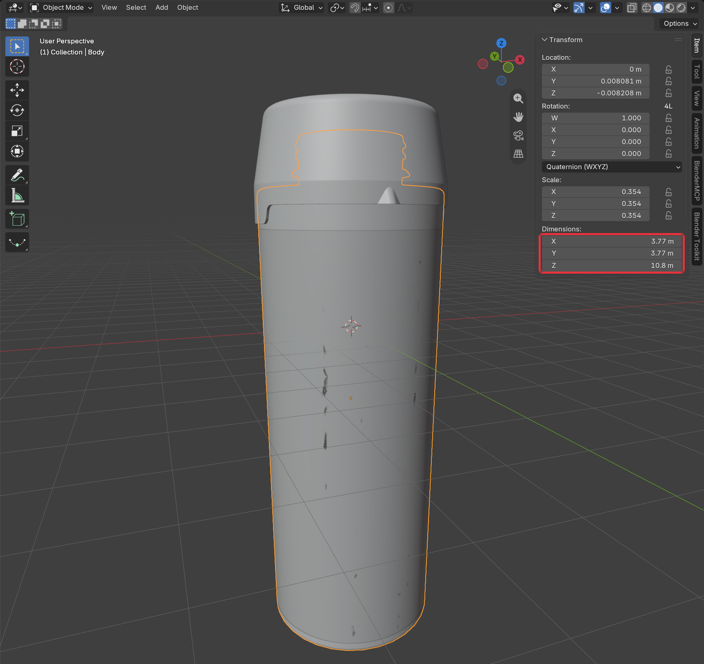
Sidebar (N) → Item → Dimensions.
Reduce the model to the 5 parts. Join pieces that are one moulded part in real life into one mesh. Delete (don't hide) anything that is not in the parts table: liners, seal discs, closure rings, dip tubes, cameras and lights.
Name every part. Each part has an object name and a mesh name. The mesh name is the object name plus 1. The three plastic parts sit under one parent empty; the two labels sit at the top level.
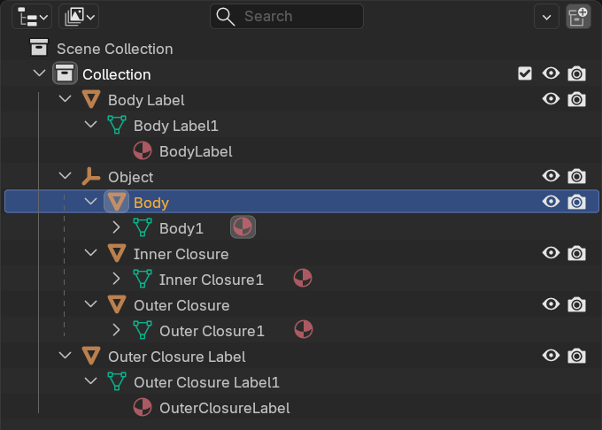
Outliner of the reference GLB: object names (orange) and mesh names ending in 1 (green), with each mesh's material.
Assign Designarea to the plastic parts (Body1, Outer Closure1, Inner Closure1): Principled BSDF, Base Color #E5E5E5, Metallic 0, Roughness 0.5. Nothing may be connected to Base Color; the designer applies colours and finishes on top of this grey.
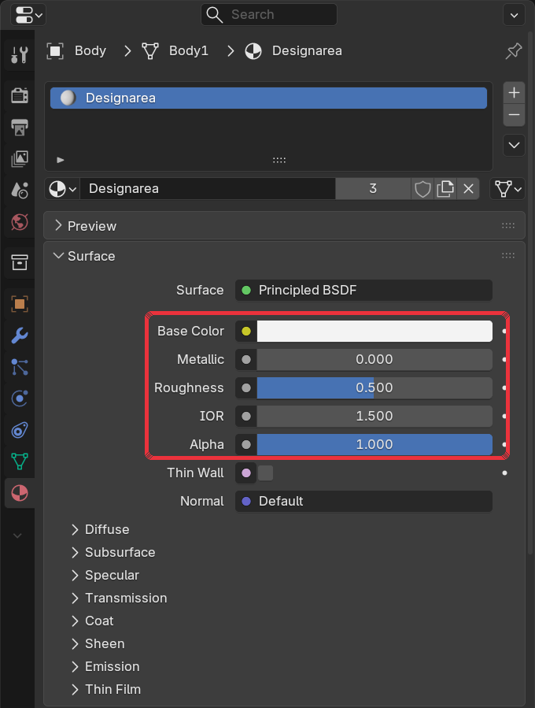
Material Properties → Designarea: Base Color #E5E5E5, Metallic 0, Roughness 0.5.
Build the body label (Body Label1). A clean, evenly spaced cylinder that sits 0.05 mm outside the body over the area a real label covers. Don't shrink-wrap it to the body, or its edges come out jagged. Shade it smooth.
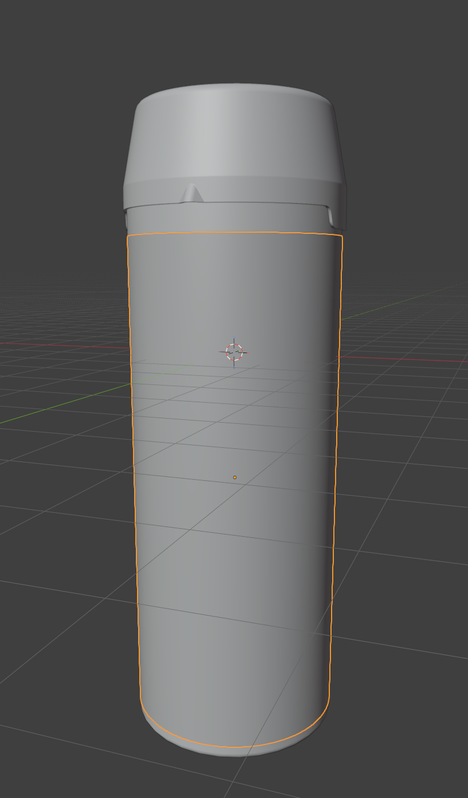
Body Label selected: a band over the label area, just outside the body.
Build the cap label (Outer Closure Label1). A flat disc on the top of the outer closure, just above its surface. If the lid has embossed text around the edge, keep the disc inside that text ring.
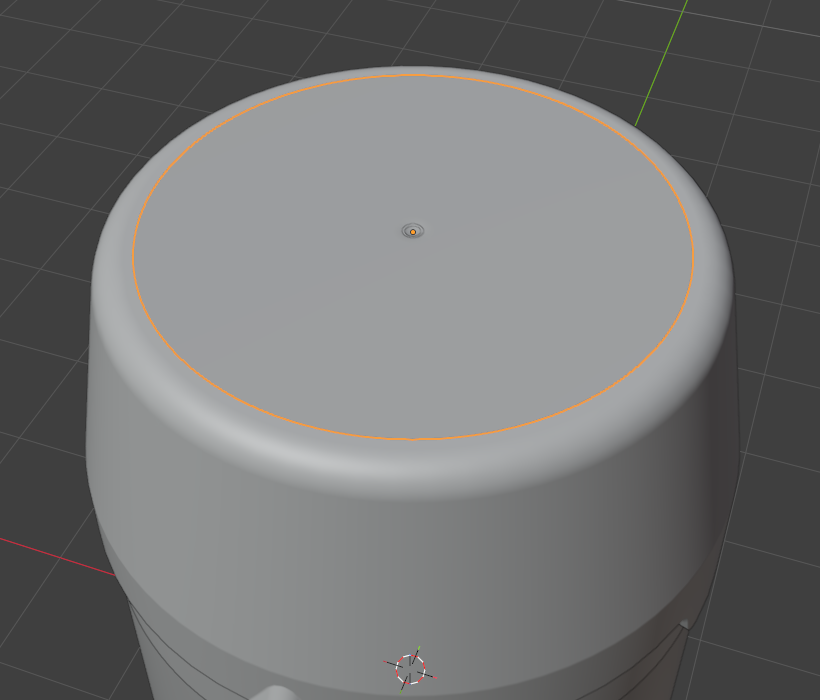
Outer Closure Label selected: a disc on the cap top.
Set up the label materials. Give Body Label1 the material BodyLabel and Outer Closure Label1 the material OuterClosureLabel. In each, connect an Image Texture node to the Principled BSDF: Color → Base Color and Alpha → Alpha. Load a fully transparent PNG named like the material:
BodyLabel: 2048 px wide, height matching the label's shape (1525 px on the reference bottle)
OuterClosureLabel: 2048 × 2048 px
The labels stay invisible until the shopper adds artwork, so the body colour shows through.
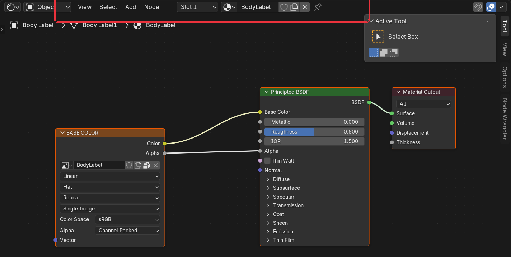
Shader Editor, BodyLabel: Image Texture Color → Base Color, Alpha → Alpha.
Then, in Material Properties → Settings, turn on (1) Backface Culling and set (2) Render Method to Blended.
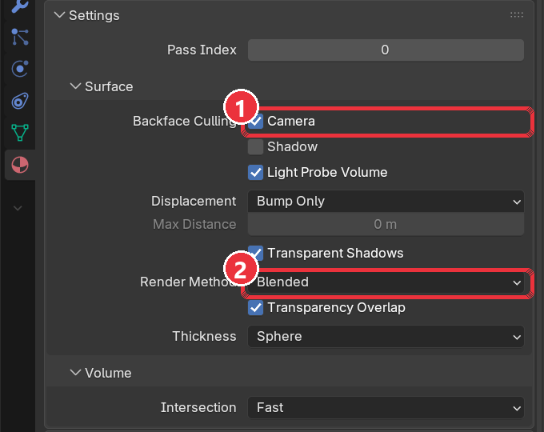
Material Properties → Settings: (1) Backface Culling on, (2) Render Method Blended.
Unwrap the UVs. One map per mesh, named UVMap, no overlaps.
Body Label1: one band across the full 0–1 square, seam at the back, front of the bottle centred.
Outer Closure Label1: flat top-down projection filling the square.
Plastic parts: cylindrical unwrap for straight shapes, conical for tapered ones. Avoid Smart UV Project on round parts; it gives uneven cell sizes.
Check each label by temporarily loading Blender's Color Grid image (Image → New → Generated Type: Color Grid) into its Image Texture node. Cells must look square on the bottle and letters must read the right way round. Put the transparent image back afterwards.
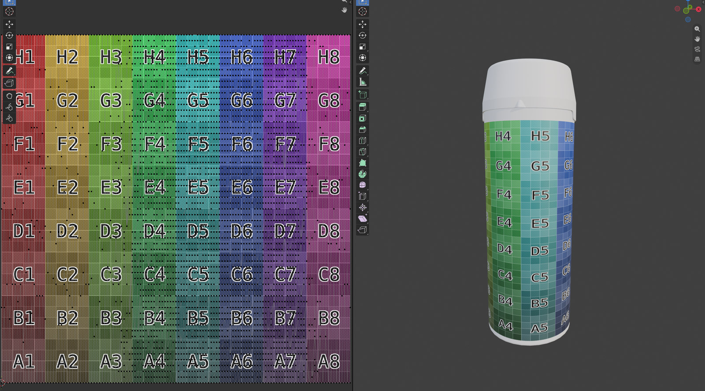
UV Editing workspace: the body label fills the grid (left) and shows square cells on the bottle (right).
Match the reference size. Scale the whole model uniformly so it matches the reference GLB for its family. The 1 L reference bottle measures about 3.9 × 4.0 × 11.3 units overall. Bottles and containers use this reference size, not the 6.333 × 4.890 × 8.711 box used for flat print products, so don't shrink a bottle to fit that box.
Export the GLB named by SKU: File → Export → glTF 2.0.
Export setting
Value
Format
glTF Binary (.glb)
Include
Visible objects; no cameras, no lights
Transform
+Y Up
Mesh
Apply Modifiers, UVs, Normals on
Material
Export; images Automatic (packs the two label placeholders)
Compression
Off
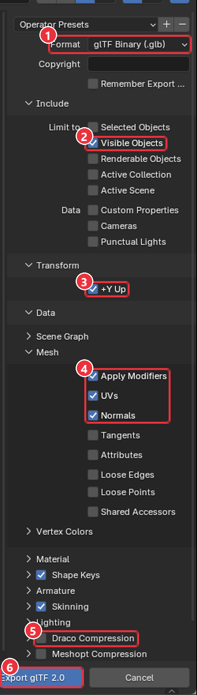
glTF 2.0 export with the settings above.
Check the export. Re-import the GLB into an empty Blender scene, or open it in a browser viewer (glTF Viewer or Babylon.js Sandbox). Confirm the 5 mesh names, that the plastic parts are plain grey (not a checker pattern) and that the labels are invisible.
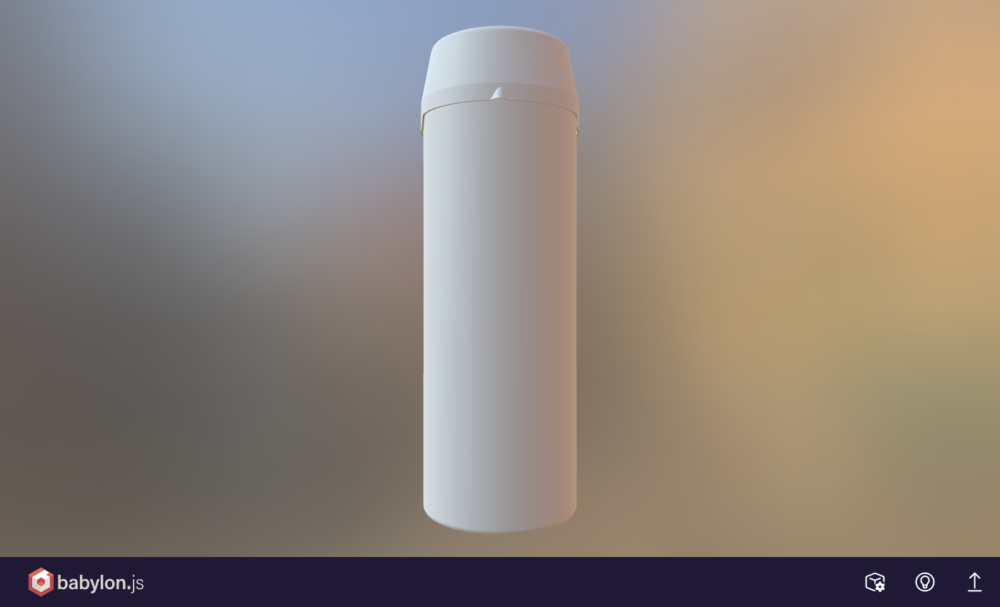
The reference GLB in the Babylon.js Sandbox: plain plastic, labels invisible. Rotate it to check every side.
4Part B: Create the part images (PNG)
Shoppers see these images when choosing which part to colour. Render one image per mesh, showing the part on its own in plain white plastic. Shoppers pick finishes separately, so the image must show no finish.
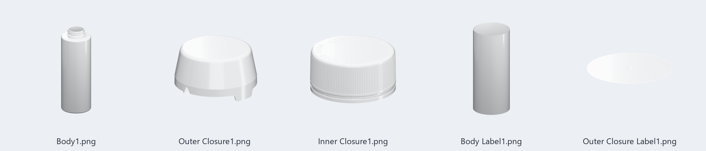
The 5 part images of the reference product, each named exactly like its mesh.
Requirement
Value
File name
Exactly the mesh name: Body1.png, Outer Closure1.png, Inner Closure1.png, Body Label1.png, Outer Closure Label1.png
Shape
Square (1:1), part fully in frame and centred
Background
Transparent (PNG with alpha)
Colour depth
Full 24-bit RGBA; no palette reduction (it causes banding)
File size
Up to 1 MB each
Look
Plain white plastic, soft studio light; grip ridges and embossed text clearly readable
Isolate the part. In a copy of your .blend, hide every mesh except the one you are rendering and give it a white plastic material (Base Color white, Roughness about 0.4).
Set up the render. Render Properties: engine Cycles, Max Samples 256, Denoise on, Film → Transparent on. Output Properties: resolution 3072 × 3072, File Format PNG, Color RGBA, Color Depth 8.
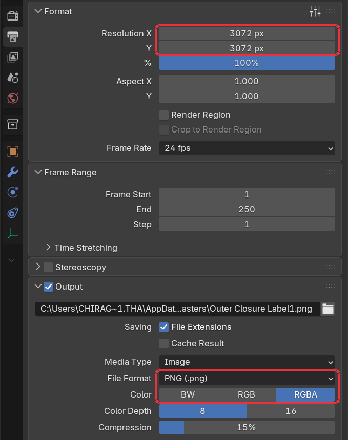
Output Properties from the reference render file: 3072 × 3072 px, PNG, RGBA.
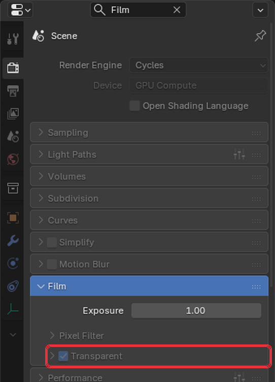
Render Properties → Film → Transparent ticked, so the background renders see-through.
Frame and render. Aim the camera at a slight three-quarter angle so the part's shape reads, with a small margin all round. Render (F12) and save as <mesh name>.png.
Fit the 1 MB limit. If a file is over 1 MB, scale it down (keeping it square) until it fits. The reference images are 1900–3060 px square. Do not reduce them to 256 colours.